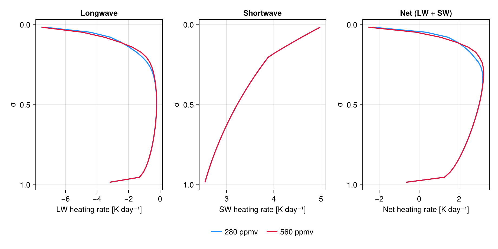

Single-column radiation
This page drives the longwave and shortwave solvers together on a single column and plots their heating-rate profiles. It serves as a template for integrating NumericalRadiation into a single-column model or for debugging a new band parameterization.
Lapse-rate column, daytime + doubled CO₂
using NumericalRadiation
using CairoMakie
nlayers = 32
σ_half = collect(range(0.0, 1.0, length = nlayers + 1))
geom = ColumnGrid(σ_half)
profile = AtmosphereProfile(
temperature = collect(range(220.0, 295.0, length = nlayers)),
humidity = fill(0.008, nlayers),
geopotential = zeros(nlayers),
surface_pressure = 100_000.0,
)
surface = SurfaceState{Float64}(sea_surface_temperature = 295.0,
land_surface_temperature = NaN,
land_fraction = 0.0,
ocean_albedo = 0.07,
land_albedo = 0.07,
cos_zenith = 0.5)
constants = PhysicalConstants{Float64}()
thermo = ThermodynamicConstants{Float64}()
lw = AnalyticBandLongwave(Float64)
sw = NumericalRadiation.OneBandShortwave(Float64)
function run(CO₂)
prof = AtmosphereProfile(
temperature = profile.temperature,
humidity = profile.humidity,
geopotential = profile.geopotential,
surface_pressure = profile.surface_pressure,
CO₂ = CO₂,
)
dT_lw = zeros(nlayers)
dT_sw = zeros(nlayers)
lw_d = LongwaveDiagnostics{Float64}()
sw_d = ShortwaveDiagnostics{Float64}(nlayers)
tbuf = similar(prof.temperature)
solve_longwave!(dT_lw, lw_d, lw, prof, geom, surface, constants)
solve_shortwave!(dT_sw, sw_d, sw, prof, geom, surface, constants, thermo;
transmissivity_scratch = tbuf)
return (; dT_lw, dT_sw, lw_d, sw_d)
end
baseline = run(280.0)
doubled = run(560.0)
fig = Figure(size = (920, 460))
ax_lw = Axis(fig[1, 1]; xlabel = "LW heating rate [K day⁻¹]",
ylabel = "σ", yreversed = true, title = "Longwave")
ax_sw = Axis(fig[1, 2]; xlabel = "SW heating rate [K day⁻¹]",
ylabel = "σ", yreversed = true, title = "Shortwave")
ax_net = Axis(fig[1, 3]; xlabel = "Net heating rate [K day⁻¹]",
ylabel = "σ", yreversed = true, title = "Net (LW + SW)")
for (c, label, color) in ((baseline, "280 ppmv", :dodgerblue),
(doubled, "560 ppmv", :crimson))
lines!(ax_lw, c.dT_lw .* 86400, geom.σ_full; label, color, linewidth = 2)
lines!(ax_sw, c.dT_sw .* 86400, geom.σ_full; label, color, linewidth = 2)
lines!(ax_net, (c.dT_lw .+ c.dT_sw) .* 86400, geom.σ_full;
label, color, linewidth = 2)
end
axislegend(ax_lw; position = :rb)
The longwave panel shows the characteristic cooling-to-space signature with stronger cooling where water vapour is most abundant. The shortwave panel shows the ozone bump near the top of the model and the warming contribution from water-vapour near-IR absorption in the lower troposphere. Doubling CO₂ reduces outgoing longwave (more negative LW heating is damped) and leaves the shortwave essentially unchanged.
TOA energy budget
Print the fluxes for each experiment:
for (label, c) in (("280 ppmv", baseline), ("560 ppmv", doubled))
@info label olr = c.lw_d.outgoing_longwave surface_lw_down = c.lw_d.surface_longwave_down toa_sw_up = c.sw_d.outgoing_shortwave surface_sw_down = c.sw_d.surface_shortwave_down
end┌ Info: 280 ppmv
│ olr = 217.65902626281527
│ surface_lw_down = 348.33360995188474
│ toa_sw_up = 82.02504015011455
└ surface_sw_down = 213.51439326531658
┌ Info: 560 ppmv
│ olr = 215.769400645381
│ surface_lw_down = 350.11440371247846
│ toa_sw_up = 82.02504015011455
└ surface_sw_down = 213.51439326531658